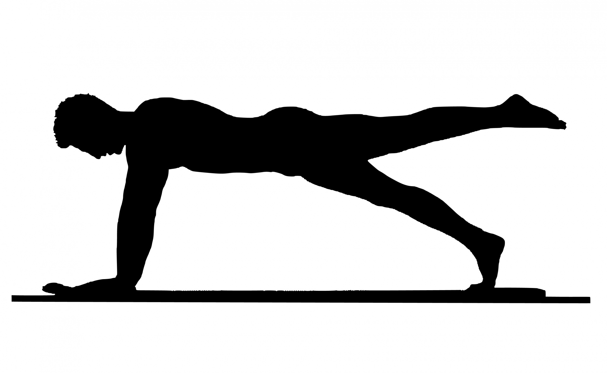

The Three Pillars of Fitness
Page 1
Page 2
Page 3
Page 4
Exercise
The pillar we shall discuss is exercise. Proper functional exercise promotes proper skeletal alignment and lean muscle growth.
Both of those have been prove improve various health marks and longevity.
Nutrition
The second pillar is nutrition. As the saying go,"You can out-train a bad diet." Our bodies need macro and mirconutrients to function properly.
There are no words for how important a good diet is in relation to our quality of life.
Sleep
The final and often overlooked pillar is sleep. Sleep is important to our cognitive function, post-workout recovery, hormonal release.
